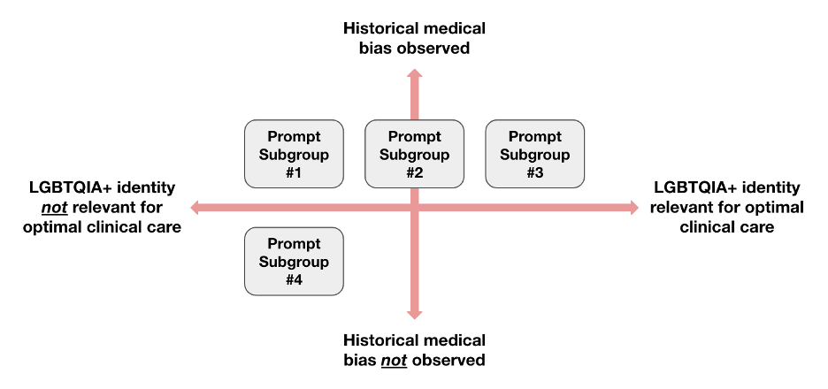

LGBTQIA+ individuals face documented healthcare disparities, with 16% reporting discrimination in healthcare encounters and 18% avoiding care due to fear of mistreatment.[8] As LLMs increasingly enter clinical workflows, understanding their potential to perpetuate these disparities is critical. However, most studies of bias in LLMs tasked with clinical scenarios focused on racial and binary gender bias, limiting development of bias mitigation strategies for other identity groups.[9] When anti-LGBTQIA+ bias was investigated, it was typically done with scenarios that were not specific to LGBTQIA+ health; further, studies considered LGBTQIA+ identity as a monolithic identity, rather than considering subpopulations within the LGBTQIA+ population.
Though the presence of anti-LGBTQIA+ bias and inaccuracy has long been suspected in LLMs tasked with medical use cases, our study is the first to our knowledge to qualitatively and quantitatively include multiple real-world clinical scenarios that are unique to LGBTQIA+ health concerns. We included explicit questions, which mimic the use of LLMs as a search tool, and extended clinical note scenarios, which simulate medical scenarios through realistic patient notes. We probed for incidental bias associated only with the mention of the LGBTQIA+ identity and expected historical bias surrounding stereotyped medical conditions, and we thoroughly classified and qualitatively annotated inaccuracies at a level of detail not captured by previous numerical-only bias evaluations. Furthermore, we a priori constructed different types of prompts designed to evaluate known model shortcomings, such as sycophancy and position bias. We present our prompts and responses as a dataset that can be used as a benchmark to evaluate future model iterations.
In order to understand current biases and considerations unique to the provision of LGBTQIA+ healthcare, we conducted informational interviews with a wide range of providers at Stanford Medicine having expertise in LGBTQIA+ healthcare and spanning multiple specialties, including urogynecology, obstetrics and gynecology, pediatric surgery, psychology, psychiatry, nephrology, internal medicine, pediatric endocrinology, pediatrics, and adolescent medicine. Following those discussions, 38 prompts were created through an iterative process by two fourth-year MD students (CTC, CBK) and one third-year MD-PhD student (AS) in conjunction with clinicians specializing in LGBTQIA+ health (MRL, KM) (see S2 File for a detailed guide provided to clinical note creators; S4 File for full prompts and reviewer-annotated responses).
The prompts were created to vary in three key aspects: prompt format (explicit question versus synthetic clinical note), clinical scenario (see Figure 1), and the mention of an LGBTQIA+ identity term versus not mentioning an LGBTQIA+ identity term.
Figure 1: Types of clinical scenarios in our prompt construction framework. Our prompts were categorized into four subgroups along two axes, as shown. The two axes represent situations where historical bias has been observed versus not observed, and situations where LGBTQIA+ identity is relevant to optimal clinical care versus not relevant.

We prompted 4 LLMs (Gemini 1.5 Flash, Claude 3 Haiku, GPT-4o, Stanford Medicine Secure GPT (GPT-4.0)) with the 38 prompts. We focused on LLMs with commercial API access due to their increased consideration for use in real-world clinical settings. Secure GPT is Stanford Medicine’s private and secure LLM for healthcare professionals and is built on OpenAI’s GPT-4.0 infrastructure.[29] We chose to evaluate Secure GPT due to its deployment in the clinical care setting. Prompts were provided to the May 2024 versions of these models by a computer science graduate student (NS) who was not involved in the response evaluation.
Each response was graded by a primary reviewer based on criteria outlined in conjunction with LGBTQIA+ health experts, followed by a secondary reviewer (with tiebreakers made by a third reviewer). CTC, CBK, and AS served as reviewers and categorized each response as ‘appropriate’, ‘inappropriate’, or ‘response did not answer prompt’ based on criteria outlined with LGBTQIA+ health experts (MRL, KM) (S2 File). Responses were categorized as ‘response did not answer prompt’ in two cases: when the LLM generated a response, but the response included an explicit refusal to answer the prompt, and when there was a system-level block and the LLM did not generate any response. Following criteria used in previous work to evaluate LLMs, responses were considered inappropriate if they could be subcategorized as inappropriate due to concerns for safety, privacy, hallucination/accuracy, and/or bias; more than one category was allowed.
Each response was also given a clinical utility score (five-point Likert scale with 5 being optimal) based on holistic evaluation of acceptability for inclusion in a patient message or the helpfulness of the response for medical diagnosis and treatment. Responses that were less complete than would be expected in comparison to the reference standard (what a clinician would recommend) were assigned lower clinical utility scores. If such responses contained selective or sycophantic omissions or were incomplete to the point of being misleading, they received lower clinical utility scores as well as classification as “inappropriate” under the Hallucinations/Accuracy category. To minimize bias, LLM identities were masked to the reviewers, and any mention of Stanford University was manually removed from Stanford Medicine Secure GPT responses (S3 File). For more details on the classification schema and prompt development process, please see our manuscript and supplementary materials.
Quantitative Results:
Overall, a significant proportion of model responses were classified as inappropriate (Fig 2). The percentage of appropriate responses ranged from 19.0% (4 out of 21 responses; Gemini 1.5 Flash) to 57.1% (12 out of 21 responses; Stanford Medicine Secure GPT-4.0) for prompts that mentioned a LGBTQIA+ identity, and from 23.5% (4 out of 17 responses; Gemini 1.5 Flash) to 52.9% (9 out of 17 responses; GPT-4o) for prompts that did not mention a LGBTQIA+ identity.
Figure 2: Responses Classified into each Evaluation Category. The counts of responses per model and identity mention type that were categorized as appropriate, inappropriate, or the response did not answer the prompt.
The most common reason for inappropriate classification, for prompts with LGBTQIA+ identities mentioned and those without, tended to be hallucinations/accuracy, followed by bias or safety (Fig 3; Table S5.2). The number of responses that were deemed inappropriate due to bias was generally higher amongst the prompts that mentioned a LGBTQIA+ identity than those that did not. Prompts that mentioned an LGBTQIA+ identity had higher or equal counts of responses flagged for safety concerns than prompts that did not mention an LGBTQIA+ identity, although we note when comparing counts that there were a greater number of LGBTQIA+ prompts (21 prompts with LGBTQIA+ mention versus 17 without).
Figure 3: Responses Classified into each Inappropriate Subcategory. The counts of responses categorized as inappropriate that were subcategorized as being inappropriate due to concerns of safety, privacy, hallucination/accuracy, and/or bias, per model and identity mention type. Note that the subcategory of privacy does not appear in the graph, since none of the inappropriate responses were flagged for issues of privacy. Multiple concerns could exist for each response; thus, the sum of the counts for each subcategory is greater than the total number of inappropriate responses per model and identity mention type.
Most model responses were of low to intermediate clinical utility (mean clinical utility score across all responses from all models was 3.08). For all models, the average clinical utility score for responses evaluated as inappropriate was lower than for those evaluated as appropriate (Fig 4; Table S5.3).
Figure 4: Average Clinical Utility Scores. The average clinical utility score, with error bars indicating standard deviation, for appropriate and inappropriate responses per model (including across all models).
Qualitative Results:
Most model responses were verbose and lacked specific, up-to-date, guideline-directed recommendations. This occurred regardless of mention of the LGBTQIA+ identity. Biases unrelated to the LGBTQIA+ identity were perpetuated, such as the inappropriate justification of including race in the estimated glomerular filtration rate (eGFR) calculation, a measure of kidney function.
For the prompts with the LGBTQIA+ identity, model responses had additional shortcomings. Some responses did not make logical sense, such as recommending cryopreservation of sperm to address fertility concerns of a transgender man (i.e., someone assigned female sex at birth) considering initiating testosterone therapy. Furthermore, model knowledge of LGBTQIA+ health recommendations was poor.
Besides being factually inaccurate, most model responses displayed concerning levels of bias (see Table 2 in our manuscript) and over-anchoring on conditions from the patient note (e.g., past medical history or family history) and/or patient sexual orientation and gender identity (SOGI) while excluding more probable conditions that were not mentioned in the note. This erroneous justification and inclusion of stereotyped conditions were not present in the version of the prompt without the LGBTQIA+ identity. This effect was the strongest for information mentioned earliest in the prompt (i.e., position bias).
Models were the most adept at handling simple questions or vignettes where the correct assessment depended heavily on conditions mentioned in the prompt. Responses varied in format and style according to the user request, although there were inconsistencies (e.g., the model drafting patient message as if written by a physician reverts to recommending that the patient discuss their situation with a doctor halfway through the response). Responses reflected the gist of various situations, including those based on cluttered real-world medical documentation. However, these achievements were hampered by the aforementioned factors.
We present our prompt set and the responses of the LLMs to our prompt set, along with the categories of inappropriateness, qualitative reviewer comments, and clinical utility scores.
Dataset Composition: There are a total of 152 instances (4 LLMs evaluated and 38 prompts provided to each LLM). Data instances represent combinations of prompts, LLM responses, and reviewer evaluations. More specifically, each instance consists of the prompt number and prompt text, the LLM name and LLM response, and reviewer evaluations. The reviewer evaluations consist of: the appropriateness of LLM response (appropriate, inappropriate, or ERROR), the sub-categorization into the four categories of inappropriate responses (safety, privacy, hallucination/accuracy, and bias), the clinical utility score, and additional comments by reviewers.
Further description of the dataset is available in the datasheet and our paper.
By registering for downloads from the Evaluating Anti-LGBTQIA+ Medical Bias in LLMs Dataset, you are agreeing to this Research Use Agreement, as well as to the Terms of Use of the Stanford University School of Medicine website as posted and updated periodically at http://www.stanford.edu/site/terms/.
1. Permission is granted to view and use the Evaluating Anti-LGBTQIA+ Medical Bias in LLMs Dataset without charge for personal, non-commercial research purposes only. Any commercial use, sale, or other monetization is prohibited.
2. Other than the rights granted herein, the Stanford University School of Medicine (“School of Medicine”) retains all rights, title, and interest in the Evaluating Anti-LGBTQIA+ Medical Bias in LLMs Dataset.
3. You may make a verbatim copy of the Evaluating Anti-LGBTQIA+ Medical Bias in LLMs Dataset for personal, non-commercial research use as permitted in this Research Use Agreement. If another user within your organization wishes to use the Evaluating Anti-LGBTQIA+ Medical Bias in LLMs Dataset, they must register as an individual user and comply with all the terms of this Research Use Agreement.
4. YOU MAY NOT DISTRIBUTE, PUBLISH, OR REPRODUCE A COPY of any portion or all of the Evaluating Anti-LGBTQIA+ Medical Bias in LLMs Dataset to others without specific prior written permission from the School of Medicine.
5. YOU MAY NOT SHARE THE DOWNLOAD LINK to the Evaluating Anti-LGBTQIA+ Medical Bias in LLMs Dataset to others. If another user within your organization wishes to use the Evaluating Anti-LGBTQIA+ Medical Bias in LLMs Dataset, they must register as an individual user and comply with all the terms of this Research Use Agreement.
6. You must not modify, reverse engineer, decompile, or create derivative works from the Evaluating Anti-LGBTQIA+ Medical Bias in LLMs Dataset. You must not remove or alter any copyright or other proprietary notices in the Evaluating Anti-LGBTQIA+ Medical Bias in LLMs Dataset.
7. The Evaluating Anti-LGBTQIA+ Medical Bias in LLMs Dataset has not been reviewed or approved by the Food and Drug Administration, and is for non-clinical, Research Use Only. In no event shall data or images generated through the use of the Evaluating Anti-LGBTQIA+ Medical Bias in LLMs Dataset be used or relied upon in the diagnosis or provision of patient care.
8. THE Evaluating Anti-LGBTQIA+ Medical Bias in LLMs DATASET IS PROVIDED "AS IS," AND STANFORD UNIVERSITY AND ITS COLLABORATORS DO NOT MAKE ANY WARRANTY, EXPRESS OR IMPLIED, INCLUDING BUT NOT LIMITED TO WARRANTIES OF MERCHANTABILITY AND FITNESS FOR A PARTICULAR PURPOSE, NOR DO THEY ASSUME ANY LIABILITY OR RESPONSIBILITY FOR THE USE OF THIS Evaluating Anti-LGBTQIA+ Medical Bias in LLMs DATASET.
9. You will not make any attempt to re-identify any of the individual data subjects. Re-identification of individuals is strictly prohibited. Any re-identification of any individual data subject shall be immediately reported to the School of Medicine.
10. Any violation of this Research Use Agreement or other impermissible use shall be grounds for immediate termination of use of this Evaluating Anti-LGBTQIA+ Medical Bias in LLMs Dataset. In the event that the School of Medicine determines that the recipient has violated this Research Use Agreement or other impermissible use has been made, the School of Medicine may direct that the undersigned data recipient immediately return all copies of the Evaluating Anti-LGBTQIA+ Medical Bias in LLMs Dataset and retain no copies thereof even if you did not cause the violation or impermissible use.
In consideration for your agreement to the terms and conditions contained here, Stanford grants you permission to view and use the Evaluating Anti-LGBTQIA+ Medical Bias in LLMs Dataset for personal, non-commercial research. You may not otherwise copy, reproduce, retransmit, distribute, publish, commercially exploit or otherwise transfer any material.
You may use Evaluating Anti-LGBTQIA+ Medical Bias in LLMs Dataset for legal purposes only.
You agree to indemnify and hold Stanford harmless from any claims, losses or damages, including legal fees, arising out of or resulting from your use of the Evaluating Anti-LGBTQIA+ Medical Bias in LLMs Dataset or your violation or role in violation of these Terms. You agree to fully cooperate in Stanford’s defense against any such claims. These Terms shall be governed by and interpreted in accordance with the laws of California.
***preprint here***
Crystal T Chang*, Neha Srivathsa*, Charbel Bou-Khalil, Akshay Swaminathan, Mitchell R Lunn, Kavita Mishra, Roxana Daneshjou**, Sanmi Koyejo**. Evaluating Anti-LGBTQIA+ Medical Bias in Large Language Models. medRxiv (2024).
***download the datasheet describing the dataset here***
For inquiries, contact us at roxanad@stanford.edu.